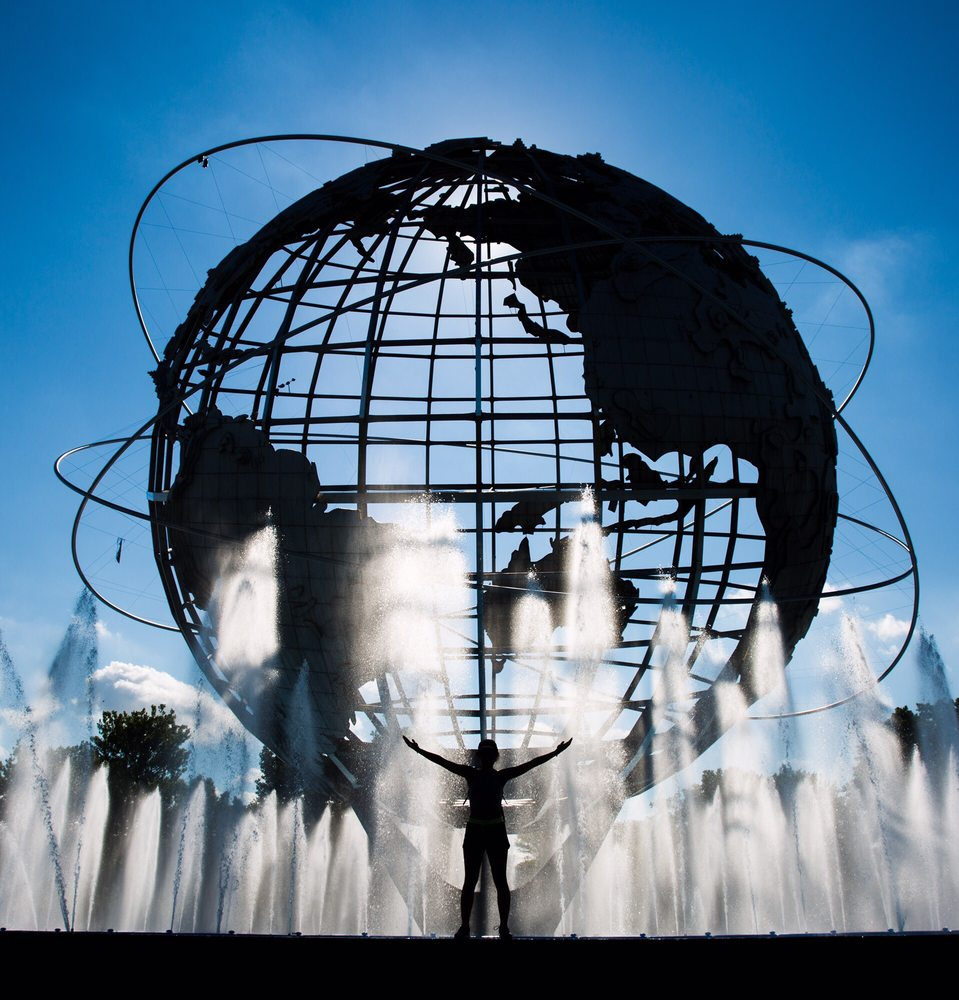

Parks
Flushing Meadows-Corona Park
Flushing Meadows–Corona Park was created as the site of the 1939/1940 New York World's Fair and also hosted the 1964/1965 New York World's Fair. It also hosts the U.S. Open tennis tournament. There's so much to do and see. Plan your visit to Flushing Meadows-Corona Park!
Museums
MOMA PS1 Museum
MoMA PS1 is one of the oldest and largest nonprofit contemporary art institutions in the United States. Located in Long Island City, New York. Plan your visit today.
Restaurants

John Brown Smokehouset
John Brown Smokehouse is a counter-service BBQ spot serving Kansas City-style meats along with sides, salads, beer & wine. Make your reservation today. Visit John Brown Smokehouse.